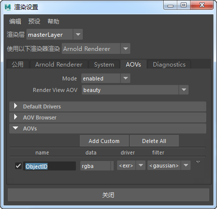
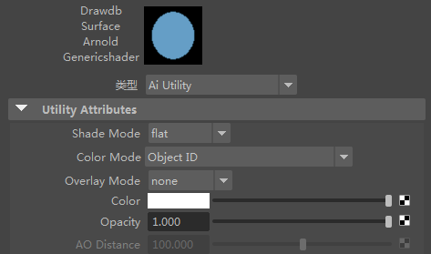
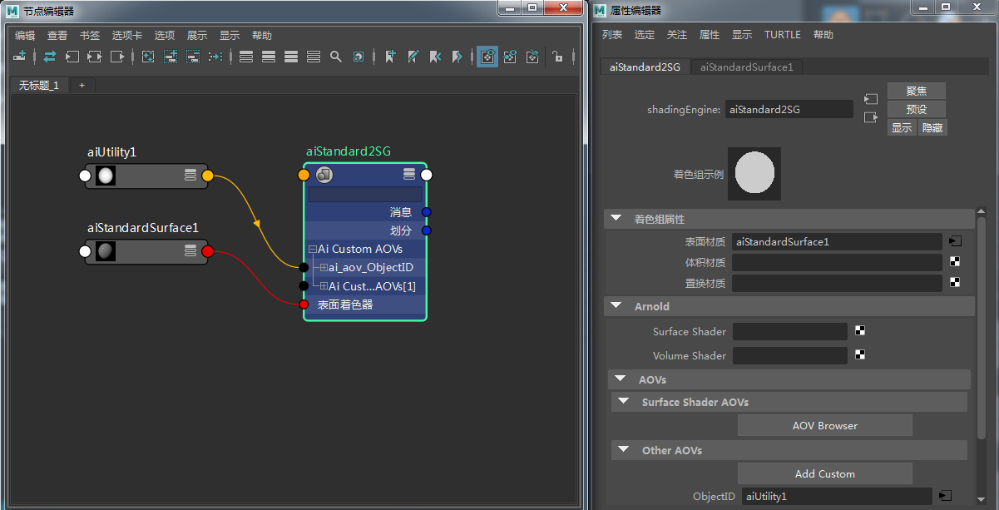
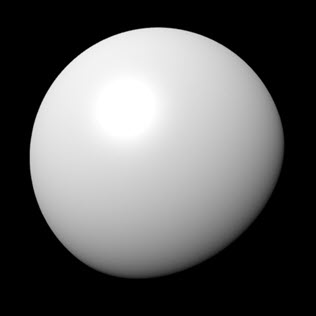
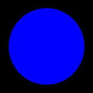

我们将介绍一种将 Ai 工具着色器触发的自定义颜色信息（设置为美景渲染）写入特定 AOV 的方法。例如，您可能会想让“对象 ID”成为您的 AOV 之一。
有关对应的 Maya 场景，请单击此处。
使用 Ai 写入颜色着色器也可以实现类似的效果。



将工具着色器拖到标准曲面着色器的着色组的“ObjectID”上
连接到自定义 AOV 的 Ai 工具将仅在具有该特定着色器的对象中执行。
现在，自定义“ObjectID”AOV 将从 Ai 工具着色器获取值，但是您也可以使用其余的标准 AOV：
|  |  |
| 美景渲染 | 通过“ObjectID”AOV 渲染的 Ai 工具节点 |